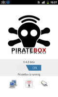
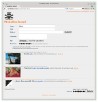
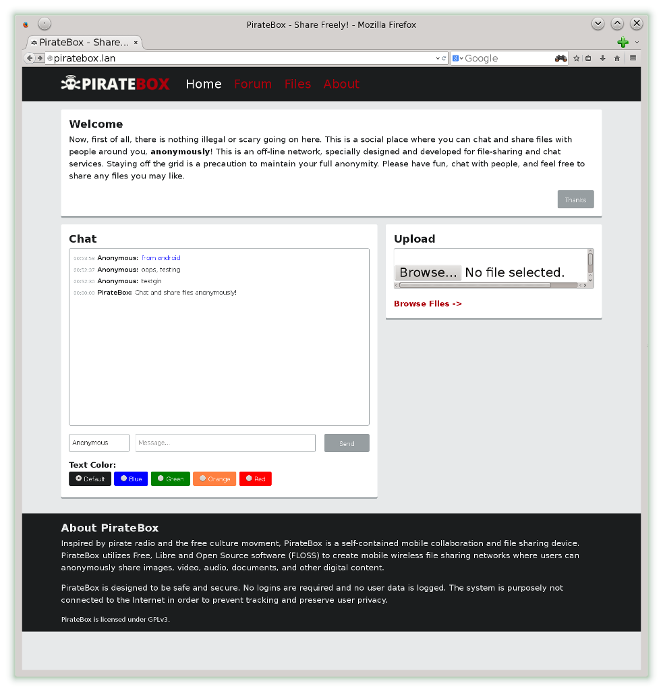
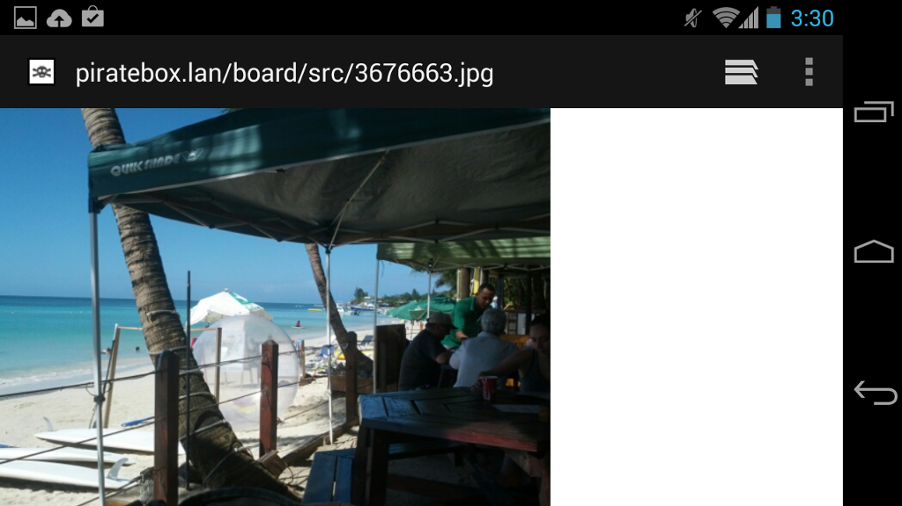

Anonymous, wireless file sharing with PirateBox
Having a bunch of people with laptops and smartphones in fairly close proximity (e.g. a user group meeting or family reunion) would seem like an opportunity to share data among them, but that generally is not quite as simple as it ought to be. Without a WiFi access point of some kind, the devices probably won't even talk to each other—besides which, without a server, there's no easy way to actually share the data. An access point connected to the internet might solve both problems, but introduces others—a lack of privacy and anonymity to start with. An access point that can also act as a server, but is not connected to the internet, takes care of those problems—so that's exactly what the PirateBox project has set out to create.

The project is not making hardware and, due to the existence of the OpenWrt project, it doesn't actually have to write much software. But pulling together those pieces and adding some tweaks for ease-of-installation and configuration of the services leads to a simple way to get a WiFi mini-server up and running quickly—and cheaply. All that's needed is one of three TP-Link wireless router models and a USB flash drive—all of which can be had for $35 or less.
Installing PirateBox is quite straightforward. I tried it on the TP-Link MR3040, which went smoothly. The process is easy to follow, requiring an install_piratebox.zip file and the appropriate squashfs filesystem for the device. Once it is powered up, connecting to the device over ethernet and logging into the administrative interface (which was on 192.168.1.1 for the MR3040, contrary to the PirateBox instructions) allows you to upgrade the firmware using the squashfs image. Once that completes, you can log into the new PirateBox using telnet, set the password (which will enable sshd), and continue on from there.

That new installation procedure is one of the headline features for the PirateBox 1.0 release that was made at the end of May. In addition, the "distribution" now includes a Universal Plug and Play (UPnP) media server and a "4chan-style" image and message board. Beyond that, the in-browser chat and file-sharing functionality is still present from earlier versions. All of that comes in a portable, battery-driven package that allows sharing and collaboration in a remote location for up to five hours.
There are a few manual steps required to finish the installation, but that is mostly just customization (passwords, UPnP display name, and so forth). The PirateBox is a working OpenWrt installation, so additional customization via new packages is also possible. Ebook library servers, wikis, OpenStreetMap servers, and so on, are all possibilities. It's only a question of what kind of data you want the PirateBox to share.

On the MR3040, which is meant to be used with a USB cellular modem, the flash drive that provides the storage for the server occupies the USB interface, which means that the device can't provide its usual service of routing traffic to the internet. That is clearly by design, as the PirateBox is meant to enable anonymity. Users simply connect to the "PirateBox - Share Freely" SSID and open a browser, which will be redirected to the main server page (seen at right). There are no logins or passwords and any names associated with chats or message board postings are completely up to the user. The PirateBox does not log any user information, either. Because it is not connected to the internet, there is no easy way for information to leak, even if personally identifiable information is entered.
Many kinds of files can be stored and retrieved from the PirateBox using a variety of mechanisms. The UPnP server allows streaming media (video and audio) directly to devices, either dedicated playback devices or smartphones and computers running UPnP clients. I tried both MediaHouse UPnP/DLNA Browser and Slick UPnP on my Android phone, which seemed to work just fine.

Smartphone browsers can connect to the PirateBox too, of course. But perhaps the most interesting smartphone initiative is the PirateBox app for Android. It turns an Android phone into a PirateBox, though without the UPnP server. It is a perfect way to repurpose an old SIM-less Android phone that you may have hanging around. Another possibility is the Raspberry Pi(rate)Box, which puts the PirateBox software onto the ubiquitous Raspberry Pi single-board computer.
PirateBox has a forum to discuss both developing and using the tool. The PirateBox team consists of creator David Darts, lead developer Matthias Strubel, and a handful of other core developers. Others are encouraged to participate via the Forum, IRC channel, and PirateBox Camp, which will be held July 12-13 in Lille, France.
One area that could use some attention is security updates. There seems to be little mention of that at the PirateBox site. It is based on OpenWrt, which has its own set of package update problems. Reinstalling new versions may be the only sensible route to updating packages with security problems. In any case, explaining that and documenting the process would certainly be helpful.
Once you start thinking about uses for the PirateBox, more and more ideas seem to spring up. A FAQ entry lists a number of places where it has been used, including by musicians to share their music at gigs, by emergency response workers to publish information and updates, and by conference organizers for conference materials and local comments. The FAQ also describes efforts to use mesh networking between PirateBox systems; an alpha version of that feature is slated for the next release. Overall, it is an interesting and useful tool that is worth a look for your local file sharing needs.
| Index entries for this article | |
|---|---|
| Security | Anonymity |
| Security | Distributions |
Posted Jun 12, 2014 18:30 UTC (Thu)
by sjj (guest, #2020)
[Link]
Posted Jun 13, 2014 1:45 UTC (Fri)
by salimma (subscriber, #34460)
[Link]
Anonymous, wireless file sharing with PirateBox
Anonymous, wireless file sharing with PirateBox